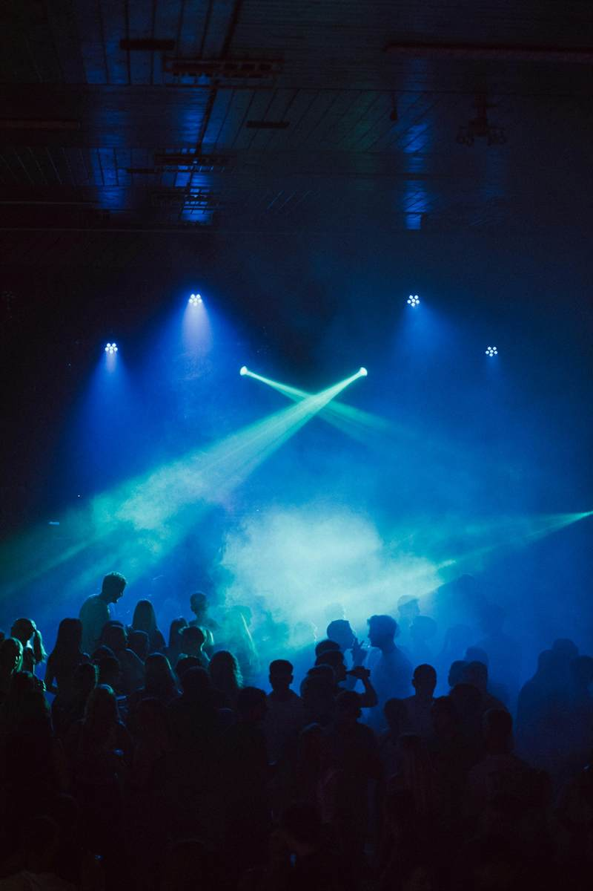
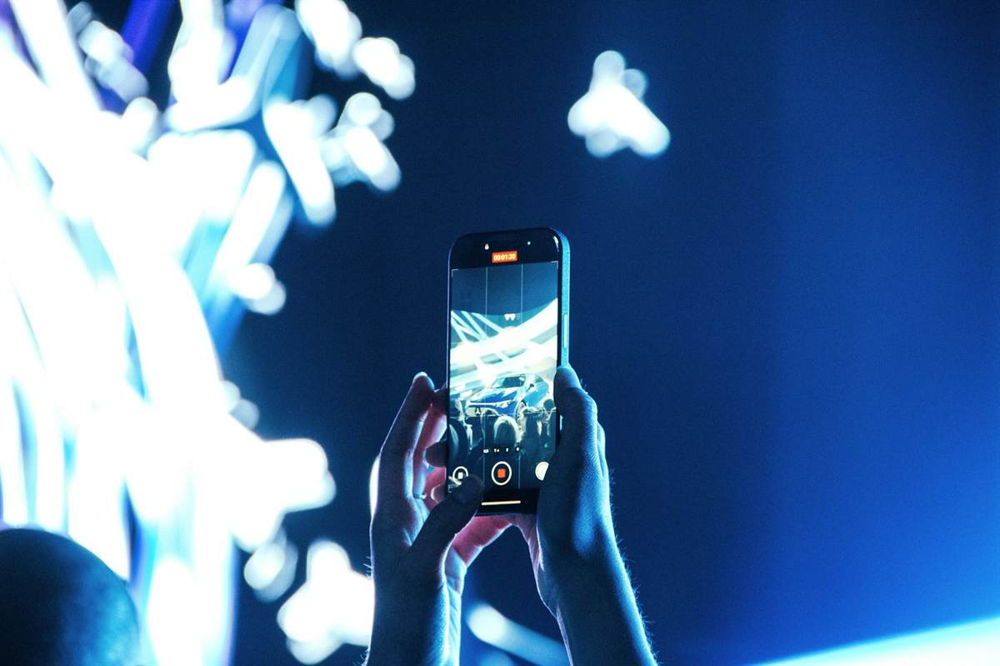

Comunidade liberada
Festival Neon SP
Transporte, after, meetups e posts de quem vai no mesmo dia.
Grupo por interesse
Caravanas e rotas
Combine ida, volta e companhia com gente do mesmo evento.

Memórias
Depois do show
Fotos, comentários e conexões continuam no feed do evento.
Posts oficiais
Line-up, horários, avisos e bastidores entram direto no feed dos participantes.
Retenção por comunidade
Depois da venda, o relacionamento continua com mensagens, comentários e chamados.
Venda com contexto
O ingresso aparece junto de prova social, conversa e tendências do evento.